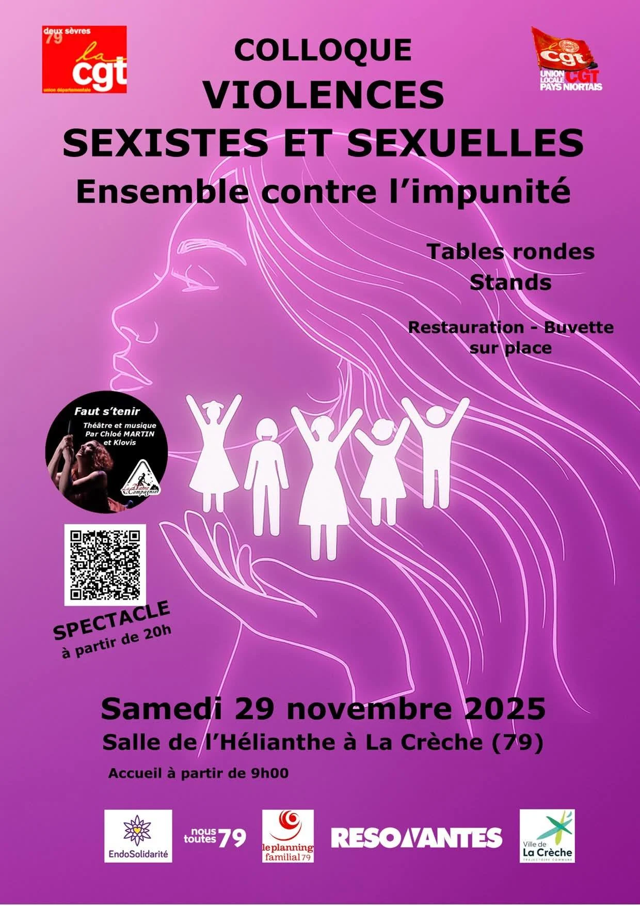
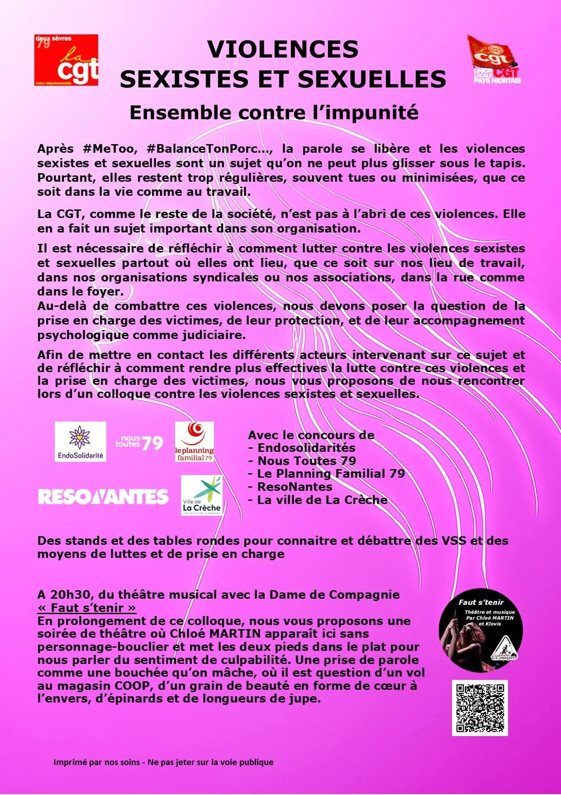

Annonce syndicale relayée
À La Crèche, un colloque de la CGT contre les violences sexistes et sexuelles
Date indiquée par Facebook · 27 novembre 2025
Repères éditoriaux
La CGT des Deux-Sèvres et l’union locale du Pays niortais avaient annoncé une journée de débats à la salle de l’Hélianthe le samedi 29 novembre 2025. L’accueil était prévu à 9 h, avec tables rondes et stands, puis le spectacle « Faut s’tenir » à partir de 20 h.
Texte conservé avec la publication
Samedi 29 novembre
Salle de l'Hélianthe à la Crèche (79)


Sources
Archive rouge · export Facebook · AR-0002-FB-00944
À lire aussi · À Niort, l’appel de Nous Toutes 79 contre les violences sexistes et sexuelles